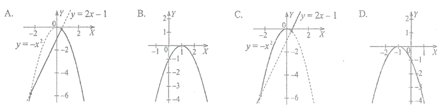
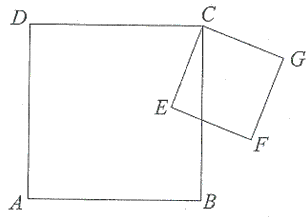
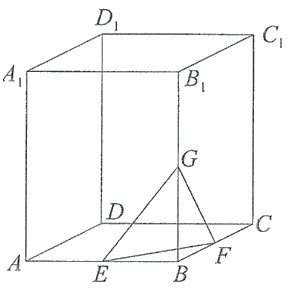

Arkusz maturalny 1
Wyrażenie \(\sqrt{1{,}5^2+0{,}8^2}\) jest równe:
A.\( 2{,}89 \)
B.\( 2{,}33 \)
C.\( 1{,}89 \)
D.\( 1{,}70 \)
D
Ile rozwiązań w zbiorze liczb rzeczywistych ma nierówność: \(|x+3| \le 0\)?
A.\( 0 \)
B.\( 1 \)
C.\( 2 \)
D.nieskończenie wiele
B
Wielokąt, który ma \(2\) razy mniej przekątnych niż boków, jest:
A.czworokątem
B.pięciokątem
C.sześciokątem
D.siedmiokątem
A
Liczba \(a\) stanowi \(80\%\) liczby \(b\). Zatem:
A.\( b=1{,}2a \)
B.\( a-b=0{,}2a \)
C.\( a-b=0{,}2b \)
D.\( 8b=10a \)
D
Na dwóch przeciwległych bokach kwadratu o polu \(P\) zaznaczono punkty \(A\) i
\(B\), przy czym punkt \(A\) jest środkiem boku, zaś punkt \(B\) dzieli bok w stosunku \(3:1\), jak
na rysunku obok. Pole zamalowanego czworokąta jest równe: 
A.\( \frac{2P}{3} \)
B.\( \frac{5P}{8} \)
C.\( \frac{3P}{4} \)
D.\( \frac{3P}{5} \)
B
Do przedziału \((1, \sqrt{2})\) należy liczba:
A.\( \sqrt{3}-1 \)
B.\( 2\sqrt{5}-3\sqrt{2} \)
C.\( \sqrt{6}-\sqrt{3} \)
D.\( \sqrt{5}-\sqrt{1} \)
D
Liczbę \(0{,}000421\) można zapisać w postaci \(a\cdot 10^k\), gdzie \(a
\in \langle 1, 10 \rangle, k \in C\). Wówczas:
A.\( a=0{,}421;\ k=-3 \)
B.\( a=4{,}21;\ k=-5 \)
C.\( a=4{,}21;\ k=-4 \)
D.\( a=42{,}1;\ k=-6 \)
C
Wiadomo, że \(\log_{0,5}x=−1\). Zatem:
A.\( x=-2 \)
B.\( x=-\frac{1}{2} \)
C.\( x=\frac{1}{2} \)
D.\( x=2 \)
D
Po usunięciu niewymierności z mianownika \(\frac{2+\sqrt{2}}{2-\sqrt{2}}\)
otrzymamy:
A.\( 3+2\sqrt{2} \)
B.\( \frac{2}{(2-\sqrt{2})^2} \)
C.\( 5\sqrt{2} \)
D.\( \frac{(2+\sqrt{2})(2-\sqrt{2})}{2} \)
A
Dwie funkcje \(f(x)=2x-1\) oraz \(g(x)=-x^2\) określone są w zbiorze
\(\mathbb{R}.\) Wówczas wykres funkcji \(h\) określonej wzorem \(h(x)=f(x)+g(x)\) jest przedstawiony na rysunku: 
B
Ile, co najwyżej, liczb naturalnych należy do dziedziny funkcji określonej wzorem
\(f(x)=\sqrt{1-x}\)?
A.\( 0 \)
B.\( 1 \)
C.\( 2 \)
D.Nieskończenie wiele
C
Pewien hurtownik zmieszał \(10\) kg cukierków orzechowych po \(21\) zł za kilogram,
\(15\) kg cukierków waniliowych po \(22\) zł za kilogram i \(20\) kg cukierków owocowych po
\(18\) zł za kilogram. Pół kilograma takiej mieszanki kosztuje:
A.\( 21 \) zł
B.\( 20 \) zł
C.\( 10{,}50 \) zł
D.\( 10 \) zł
D
Funkcja liniowa \(f(x)=6-2x\) przyjmuje wartości
nieujemne wtedy i tylko wtedy, gdy:
A.\( x\in (-\infty, 3\rangle \)
B.\( x\in \langle 3, +\infty ) \)
C.\( x\in (-\infty, 3) \)
D.\( x\in (3, +\infty ) \)
A
Funkcja liniowa \(f(x)=(m^2-1)x-7\) jest malejąca, jeśli:
A.\( m\in \mathbb{R} \)
B.\( m\in (-\infty , -1) \)
C.\( m\in (-1, 1) \)
D.\( m\in (-\infty , 0) \)
C
Suma długości krawędzi sześcianu wynosi \(24\) cm. Pole powierzchni całkowitej tego
sześcianu jest równe:
A.\( 32 \) cm2
B.\( 24 \) cm2
C.\( 16 \) cm2
D.\( 8 \) cm2
B
Wyrażenie \(\frac{x^{-2}+x^{-3}}{x^{-3}-x^{-2}}\), gdzie
\(x \ne 0\) i \(x \ne 1\) , po uproszczeniu może
mieć postać:
A.\( \frac{x+1}{1-x} \)
B.\( \frac{x-1}{x+1} \)
C.\( \frac{x+2}{x-1} \)
D.\( \frac{1+x}{x} \)
A
Ze wsi \(A\) do wsi \(B\) prowadzi \(5\) ścieżek przez las. Na ile sposobów można
odbyć spacer \(A-B-A\) tak, aby spacer ze wsi \(B\) do wsi \(A\) odbyć
inną ścieżką niż ze wsi \(A\) do wsi \(B\)?
A.\( 5^4 \)
B.\( 5+4 \)
C.\( 4^5 \)
D.\( 5\cdot 4 \)
D
Ogólny wyraz nieskończonego ciągu \((a_n)\), gdzie \(n \in \mathbb{N}_+\), jest
następujący: \(a_n=(n^2-2)(n^2-3n)\). Wszystkie miejsca zerowe ciągu
\((a_n)\) tworzą zbiór:
A.\( \{-\sqrt{2}, 0, \sqrt{2}, 3\} \)
B.\( \{0, \sqrt{2}, 3\} \)
C.\( \{0, 3\} \)
D.\( \{3\} \)
D
Pan Jan spłacał kredyt w wysokości \(12\ 000\) zł w sześciu ratach, z
których każda kolejna była o \(500\) zł mniejsza od poprzedniej. Pierwsza rata była równa:
A.\( 2750 \)zł
B.\( 3000 \)zł
C.\( 3250 \)zł
D.\( 3500 \)zł
C
Punkty \(A\) i \(B\) należą do okręgu o środku w punkcie \(O\) i promieniu \(3\).
Wiadomo, że \(|\sphericalangle AOB|=150^\circ \). Cięciwa \(AB\) dzieli okrąg na dwa łuki, z których
większy ma długość:
A.\( 2{,}5\pi \)
B.\( 3{,}5\pi \)
C.\( 3{,}75\pi \)
D.\( 5{,}25\pi \)
B
W rombie bok i krótsza przekątna mają taką samą długość, równą \(a\). Wówczas
dłuższa przekątna ma długość:
A.\( a\sqrt{2} \)
B.\( a\sqrt{3} \)
C.\( 2a \)
D.\( \frac{a\sqrt{3}}{2} \)
B
W równoległoboku kąt rozwarty jest cztery razy większy od kąta ostrego \(\alpha\).
Zatem:
A.\( \alpha=36^\circ \)
B.\( \alpha=45^\circ \)
C.\( \alpha=60^\circ \)
D.\( \alpha=72^\circ \)
A
W ostrosłupie prawidłowym czworokątnym krawędź boczna ma długość \(5\) cm, a
krawędź podstawy \(\sqrt{8}\) cm. Wówczas cosinus kąta nachylenia krawędzi bocznej do płaszczyzny
podstawy jest równy:
A.\( \frac{\sqrt{2}}{5} \)
B.\( 0{,}6 \)
C.\( 0{,}4 \)
D.\( \frac{\sqrt{8}}{10} \)
C
Rozłóż wielomian \(W(x)=x^4+5x^2-x^3-5x\) na czynniki
możliwie najniższego stopnia.
\(W(x)=x(x^2+5)(x-1)\)
W trójkącie prostokątnym przyprostokątne mają długość \(a\) i \(b\), zaś naprzeciw
boku \(a\) znajduje się kąt ostry \(\alpha\). Wykaż, że jeśli \(\operatorname{tg}
\alpha = 2,\) to:\[\frac{(a+b)\cdot b}{a^2-b^2}=1\]
Trzy lata temu pewne miasteczko liczyło \(25\ 000\)
mieszkańców. Przez trzy ostatnie lata każdego roku liczba mieszkańców zmniejszyła się o \(10\%\).
Oblicz, ile osób mieszka w tym miasteczku.
\(18225\)
Dane są kwadraty: \(ABCD\) i \(CEFG\) (zobacz rysunek poniżej). Wykaż, że
\(|DE|=|BG|\). 
W sklepie wśród dziesięciu żarówek trzy są wadliwe, a pozostałe są dobrej jakości.
Klient kupił losowo wybraną jedną żarówkę (bez sprawdzania). Po namyśle dokupił jeszcze jedną. Czy
prawdopodobieństwo zdarzenia, że klient, otrzyma obie żarówki dobrej jakości, jest większe od
\(0{,}5\)? Odpowiedź uzasadnij, wykonując odpowiednie obliczenia.
\(p\lt \frac{1}{2}\)
Wykres funkcji \(f(x)=x^2-2x-8,\) gdzie \(x \in
\mathbb{R}\), przecina oś \(OX\) w punktach \(A\) i \(B\).
- Wyznacz współrzędne punktów \(A\) i \(B\).
- Oblicz pole trójkąta \(AWB\), jeśli \(W\) jest wierzchołkiem paraboli będącej wykresem funkcji \(f\).
\(A=(-2,0)\), \(B=(4,0)\), \(P_{\Delta AWB}=27\)
Wykaż, że różnica sześcianów dwóch kolejnych liczb nieparzystych jest podzielna
przez \(2\) i jednocześnie nie jest podzielna przez \(4\).
Przekątna graniastosłupa prawidłowego czworokątnego \(ABCDA_1B_1C_1D_1\) ma długość
\(2\sqrt{219}\), a krawędź podstawy - \(10\sqrt{2}\).  Wyznacz:
- Wysokość graniastosłupa.
- Pole trójkąta \(EFG\), którego wierzchołkami są środki trzech krawędzi wychodzących z jednego wierzchołka podstawy.
\(H=2\sqrt{119}\), \(P_{\Delta EFG}=60\)
Punkty \(A\), \(B\) i \(C\) okręgu dzielą ten okrąg na trzy łuki, których długości
pozostają w stosunku \(\overset{\frown}{|AB|}:\overset{\frown}{|BC|}:\overset{\frown}{|AC|}=3:4:5\).
Oblicz miary kątów \(\alpha\), \(\beta\), \(\gamma\) trójkąta \(ABC\). 
\(\alpha =60^\circ \), \(\beta =75^\circ \), \(\gamma =45^\circ \)